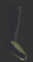

| Powerups
Slow Motion |
|||||||
| For the full spectacular and vernacular TS experience, this powerup is the way to go. Activate this baby and 5 seconds of slow motion balletic gunfighting is your reward. Similar to Slow Pause, this powerup affects all of your opponents, but in this case, everyone has the same freedom of movement that you do. The advantages of this are that you get more time to aim your shots and and more time to engineer yourself a stunt-kill. Though the same also applies to your opposition... |
|||||||
| Slow Pause |
|||||||
| When activated, this powerup vastly slows down all your opponents for 3 seconds, whilst allowing you some limited movement. Everyone will still be able to fire, but at a limited rate. However, your bullets will only travel at walking pace, giving your target some opportunity to avoid them. |
|||||||
| Superjump |
|||||||
|  |
Once collected, the Superjump will give you the capability to leap tall buildings in a single bound, quite literally. By pressing duck and jump together, you will find you can gain serious amounts of altitude. The longer you hold jump, the higher you go. This can be useful for both surprising your opponents and for reaching those hard-to-get places. |
||||||
| Infinite Ammo |
|||||||
| Does exactly what it says on the tin. Gives you unlimited ammo for 3 seconds. Tip: Wait until your ammo runs low, then activate it, this can effectively double or triple your magazine size. |
|||||||
| Double Firerate |
|||||||
| Simply enough, for 5 seconds this powerup doubles the rate of fire of whatever weapon is currently in use. In the case of autos, this means that an entire clip can be emptied in just over a second. In the case of semi-autos, it effectively converts your weapons into a full-auto, be it a shotgun or a pistol. Because of the prodigious recoil involved with such ludicrous rates of fire, this powerup is best used at very close range. |
|||||||
| Health |
|||||||
| This pickup boosts your health up to 150 points, allowing you to take a lot more punishment before dropping. Once collected, your health will drop by 1 point per second until it returns to 100. |
|||||||
| Kung-Fu |
|||||||
| This boosts the damage that all your Kung-Fu attacks do for the duration of your present life. |
|||||||
| Grenade |
|||||||
| When picked up, this powerup provides you with one all-singing, all-dancing frag grenade. Primary fire causes you to lob the grenade up and over obstacles, whilst secondary fire causes you to roll the grenade across the ground. After a 3 second delay, she go boom, hopefully along with the bad guys. This is only available in Deathmatch games, and will also take up 15 slots in your inventory. |
|||||||
| Kevlar |
|||||||
| Grabbing this will give you a 100 points of armour, which will reduce the damage that certain rounds inflict. This does not affect the number of free slots you have. |
|||||||
| If a player is holding a powerup when he's killed, it will be dropped and is free to be picked up by anyone else. Yet another reason to indiscriminately frag everyone. Like you needed or wanted one... |
|||||||